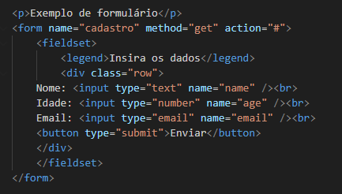

Para iniciarmos a construção de um site será necessário conhecer como funciona a estruturação do site. Quais ferramentas são utilizadas e comandos básicos para iniciar o desenvolvimento.
Para auxiliar nesse processo é recomendado utilizar o programa Visual Studio Code. É um programa gratuito e com diversos recursos.
Link para download https://code.visualstudio.com/download
Após instalar, acesse a opção de extensões e instale a extensão Live Server.
Extensão utilizada para você conseguir visualizar a página criada em tempo real. Ela atualizada automaticamente quando você salva as alterações realizadas no Visual Studio Code.
Ao desenvolver um site é importante entender como uma página é estruturada.
Ela é divida em:
Cabeçalho (header) - grande faixa na parte superior onde fica o título, logotipo.
Barra de navegação - Onde geralmente é criado o menu do site com links e guias.
Conteúdo principal (main) - Onde fica a maior parte do conteúdo do site.
Barra lateral (sidebar) - Informações como links, anúncios. Artigos relacionados.
Rodapé (footer) - Faixa inferior da página onde fica os avisos, direitos autorais ou informações de contato.
Para implementar essa marcação semântica, o HTML fornece tags dedicadas que você pode usar para representar essas seções, por exemplo:
cabeçalho:<header>. barra de navegação: <nav>. conteúdo principal: <main>, com várias subseções de conteúdo representadas por <article>, <section>, e elementos <div>. rodapé: <footer>.No HTML podemos criar a lista ordenada e a não ordenada.
É uma lista numerada
São organizadas por marcadores
Nas duas listas é possível criar uma lista dentro da outra
Na construção de um formulário existe alguns paramentros importantes dentro da tag <form>.
Name - Nome da instância para se usado no Javascript.
Action - Local onde informamos o endereço do servidor para envio dos dados preenchidos no formulário.
Method - POST: Não envia os dados ela URL, envia via body por por meio de uma requisição. Também existe o GET. Essa é uma opção não segura, pois envia os dados pela URL ficando visível.
Target = blank - Faz com que ao apertar no botão enviar, o navegador abra uma outra aba mantendo o formulário na outra aba.
Autocomplete - OFF: Após enviar os dados ele apaga os campos quando clicar em voltar no navegador. ON: No on, se clicar em voltar ele mantém os campos preenchidos, só apaga o campo senha. É um recurso do navegador.
Onsubmit - Evento do Javascript - Muito usado para validar o formulário.
Existem outros parametros importantes para se estudar. Recomendado consultar o site https://www.w3schools.com/
Exemplo de formulário
Com o checkbox você pode criar caixas de perguntas que podem ser selecionado multiplos valores. É criado uma variável com mais de um valor e envia todos os itens juntos para o servidor.
Para o servidor receber todos os dados juntos, criar uma variável no seguinte formato: name="opcional[]". O servidor recebe da seguinte forma [“queijo”, “cebola”]
No radio button só é possível selecionar uma das opções
Conforme é citado no portal Dev Mídia:
Surgido a partir de um consórcio entre a W3C (World Wide Web Consortium) e a WHATWG (Web Hypertext Application Technology Working Group), o HTML5 será o novo padrão para a estruturação e apresentação de conteúdo na Word Wide Web trazendo melhorias significativas com novas funcionalidades de semântica e acessibilidade, além de melhorar o suporte aos mais recentes conteúdo multimídias. As principais mudanças que a nova versão proporcionará aos usuários são: Melhor tratamento de exceção, mais tags para substituir scripts, independência de plataforma e redução da necessidade de plugins externos.
Com a evolução do HTML para o HTML5, algumas Tags estão deixando de serem utilizadas. A ideia é para que o HTML seja mais estrutural e o CSS fique com a formação.
Algumas tags que não mais utilizadas no HTML: Font, bgcolor, center, big.
No link https://www.w3.org/TR/html5-diff/ é possível entender com mais detalhes as novas mudanças.